2. Draw a flower¶
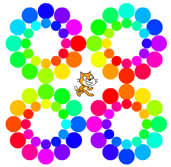{kind=link}
In this practice we are going to program a series of functions that draw various types of flowers on the screen.
We start the Scratch editor.
We create a new function called Start.
First click on the button more blocks

Then click on create a block

Then we change the name of the new block to Home

Finally we press the button OK
We program the Start function with the following blocks.
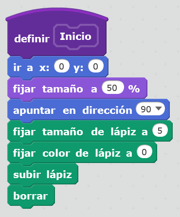This program places the cat in the center of the screen, prepares the pen, and erases any previous drawing.
We will create a new function called Point.
First click on the button more blocks
Then click on create a block
Then we change the name of the new block to Point
Now we will add the variable Radius.
Within options, we add a numeric input
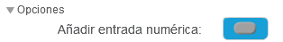
We will call the new entry Radio
Finally we press the button OK
Now we will program the function that draws a point on the screen (pen down and pen up).
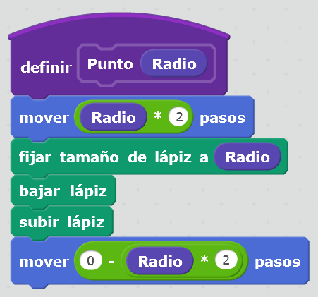This program will draw a point of a size that depends on the variable radius. If the radius is very large, the point will be very large, and if the radius value is small, the point drawn will be small.
Next we will create a small test program to check that the dot is drawn on the screen.
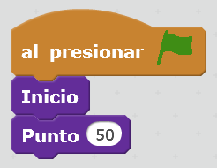When executing the program, pressing the green flag , the following drawing will appear on the screen.
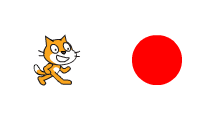The cat has drawn a point of size 50 at a distance of 100 steps
Once everything works fine, we will delete the test program.
Now that we can draw points, we are going to program the drawing of a flower.
First we will create a new function called Flower.
First click on the button more blocks
Then click on create a block
Then we change the name of the new block to Flower
Now we will add the variable Size.
Within options, we add a numeric input
We will call the new entry Size
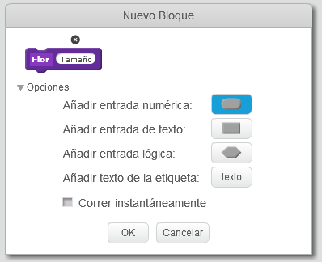Finally we press the button OK
Next we will program the function that will draw a flower on the screen.
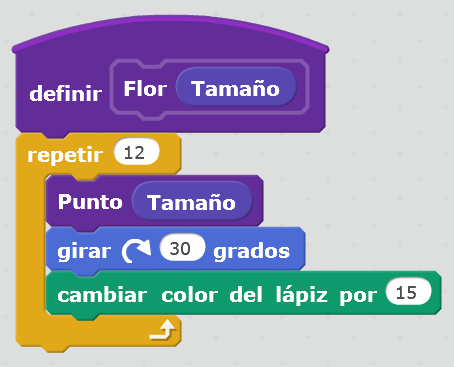To test that the function is well written, let's create a small test program that draws the flower on the screen.
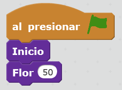After pressing the green flag , a flower made of colored dots will appear on the screen around the cat as shown in the following image.
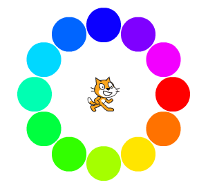Once everything works fine, we will delete the test program.
Finally we are going to play with the flower function so that drawings made up of flowers of different sizes appear on the screen.
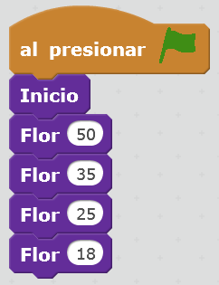The previous program draws on the screen an image made up of several colored rings around the cat.
Click on the green flag to see the result.
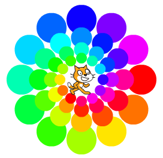Once everything works fine, we will delete the test program.
With the following program, various flowers will be drawn at different points on the screen. In the end the cat will be in the middle of all.
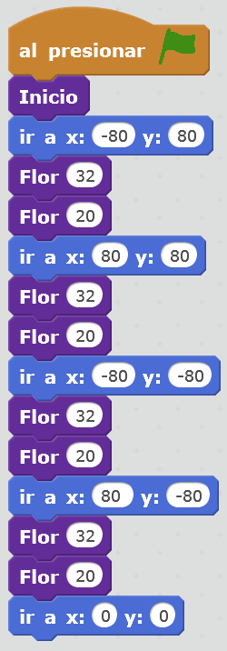Click on the green flag to see the result.
{kind=link}
{kind=link}
{kind=link}
{kind=link}
{kind=link}
{kind=link}
{kind=link}
Exercises¶
- Modify the program so that all the points of the flower function have the same color. Draw a flower made up of large red rings on the outside and small green rings on the inside.
- Make a program that draws five rings positioned as the logo of the olympic games.